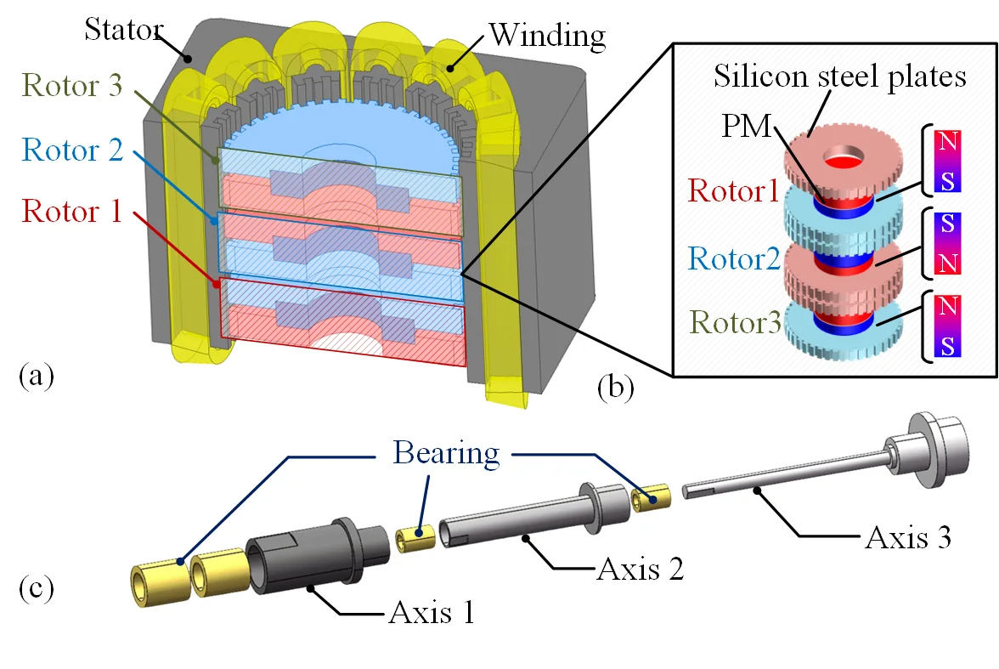
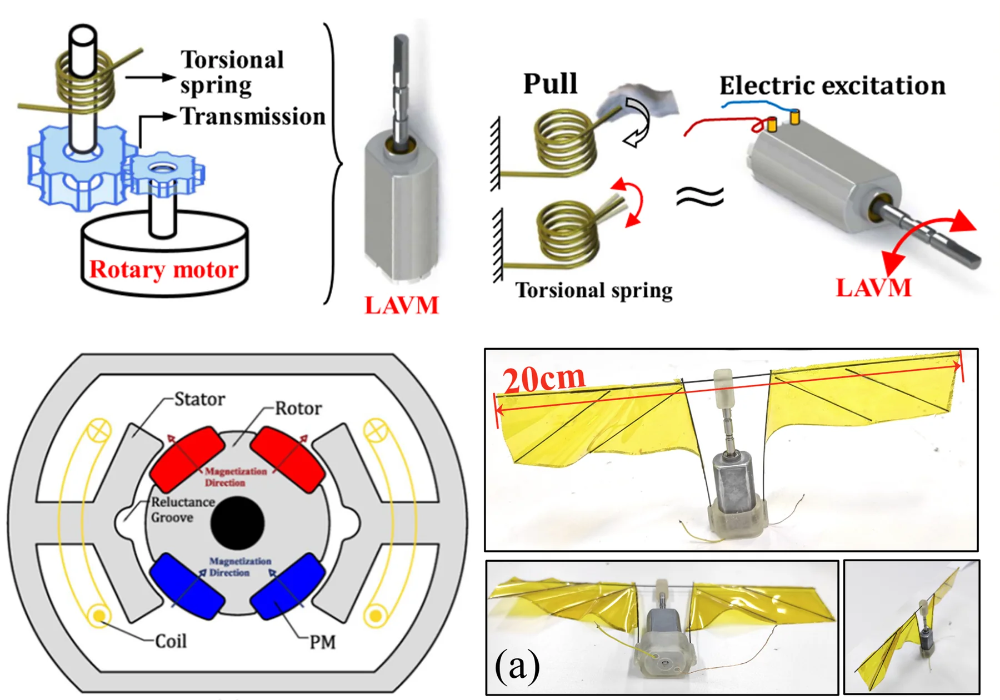
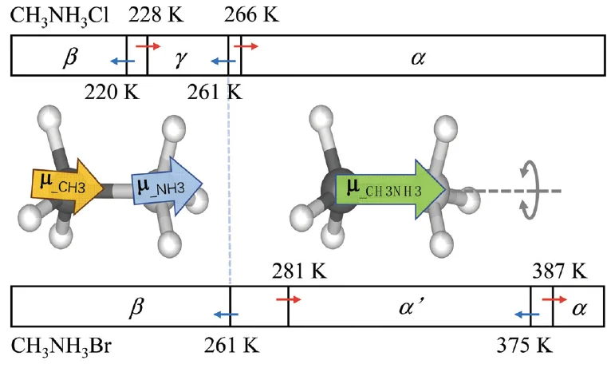

浙江大学 · 中国 杭州电气工程博士研究生（直博）
1 研究方向
电机设计与控制：多转子／多端口电机、磁场调制电机、多相电机及有限转角电机。
应用背景：风力发电、机器人驱动与微型扑翼飞行器。
2 教育背景
哈尔滨工业大学（深圳）· 中国 深圳电气工程及其自动化工学学士
3 代表性研究

多相多转子电机的优化设计、统一建模与解耦控制
基于多相正交子空间提出多转子解耦一体化电机，研究其通用拓扑、统一设计方法、磁场调制效应与多转子解耦控制，并完成双转子及三转子样机验证。自主研制多相驱动硬件平台，并搭建基于 SIEMENS PLC 与 RT-LAB 的多轴协调测试系统。
-
2026
Yiyang Xu, Hao Chen, Dong Yan, and Tingna Shi. Modeling and Design of an Integrated Machine With Decoupled Multirotors Based on Multiphase Orthogonal Subspaces. IEEE Transactions on Industrial Electronics, Early Access.
-
2026
Yiyang Xu, Jian Wang, Dong Yan, Yanfei Cao, Hao Chen, and Tingna Shi. Operation Principle and Improved Topology of a Triple-Degree-of-Freedom Seven-Phase Motor. IEEE Transactions on Industry Applications, vol. 62, no. 1, pp. 879–892.
-
2024
Yiyang Xu, Jian Wang, Tingna Shi, Dong Yan, Hao Chen, and Yanfei Cao. Operation Principle of a Novel Coaxial Triple-DOF Motor. 27th International Conference on Electrical Machines and Systems (ICEMS), Fukuoka, Japan.
- Patent
一种多轴电机及其拓扑结构设计方法（CN118783714B）

高频往复执行器用有限转角振动电机并发设计
建立机电耦合模型并揭示系统固有共振特性，提出考虑负载条件与共振点的并发设计方法，实现执行系统整体效率优化及微型扑翼飞行器应用。完成三种不同样机研制，并利用红外传感器与高速相机提出非接触式振动测量方法。
-
2024
Yiyang Xu, Hanlin Zhan, Hui Yang, Di Wu, and Dianguo Xu. Coupled Modeling and Design Principles of Limited-Angle Vibration Motors for High-Frequency Reciprocating Rotation. IEEE Transactions on Industrial Electronics, vol. 71, no. 10, pp. 12803–12813.
-
2024
Hanlin Zhan, Yiyang Xu, Huajie He, Di Wu, Hui Yang, and Wenjie Chen. Operation Analysis and Torque Performance Optimization of a Novel Self-Aligning Limited-Angle Vibration Torque Machine. IEEE Transactions on Industry Applications, vol. 60, no. 1, pp. 312–320.
-
2022
Hanlin Zhan, Yiyang Xu, Huajie He, Di Wu, Wenjie Chen, and Dianguo Xu. Operation Analysis and Torque Performance Optimization of a Novel Self-Aligning Limited-Angle Vibration Torque Machine. IEEE 5th International Electrical and Energy Conference (CIEEC), Nanjing, China.
-
2024
Zhiyuan Zhang, Yiyang Xu, Yuhan Liu, Haitian Hu, and Xuan Wang. A Physics-Based Simulator for Bi-Directional Motor Driven Flapping Wing Micro Air Vehicles. Intelligent Robotics and Applications (ICIRA), Xi’an, China.
- Patent
一种有限转角振动力矩电机结构（CN221103180U）

低温铵盐材料的磁电耦合特性
研究低温下质子运动驱动的磁电耦合机制，并承担主要实验测试工作，拓展面向信息存储技术的多铁材料体系。围绕铵盐及有机—无机杂化材料开展电极化、磁性与低温相变特性的实验表征。
-
2023
Yiyang Xu, Lei Meng, Miaomiao Zhao, Chuxin Peng, and Fei Yen. Electric Polarization and Magnetic Properties of (NH₄)₁₋ₓKₓI (x = 0.05–0.17). Journal of Alloys and Compounds, vol. 960, p. 170685.
-
2023
Lei Meng, Miaomiao Zhao, Yiyang Xu, Chuxin Peng, Yang Yang, Tiantian Xing, Peng Ren, and Fei Yen. Magnetic Interactions Based on Proton Orbital Motion in CH₃NH₃PbI₃ and CH₃NH₃PbBr₃. Scripta Materialia, vol. 226, p. 115229.
-
2022
Chuxin Peng, Lei Meng, Yiyang Xu, Tiantian Xing, Miaomiao Zhao, Peng Ren, and Fei Yen. Ferroelectricity Driven by Orbital Resonance of Protons in CH₃NH₃Cl and CH₃NH₃Br. Journal of Materials Chemistry C, vol. 10, no. 4, pp. 1334–1338.